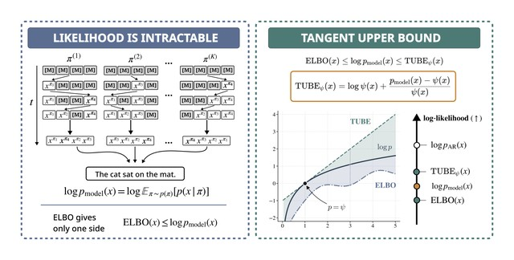
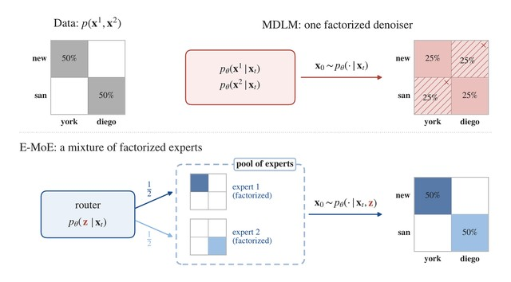
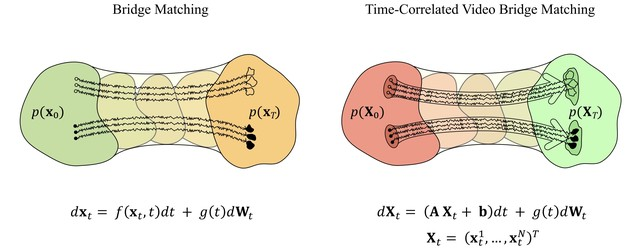
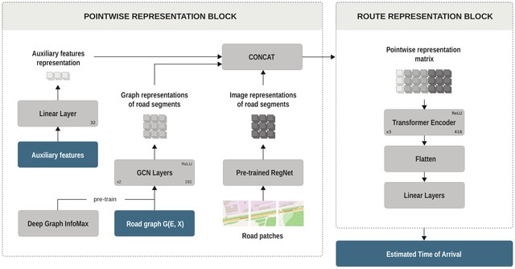

TUBE: Tangent Upper Bound on Evidence for Discrete Diffusion Language Models
I am a Generative AI Research Scientist at AXXX and a Master's student in the Math of Machine Learning program at HSE University and the Applied AI Institute. I work on discrete diffusion language models, likelihood estimation, and related areas.
Discrete Diffusion and Multi-Token Prediction, Diffusion and Flow Matching Distillation, Speculative Decoding, RL Fine-Tuning and Stochastic Optimal Control for Diffusion Models, Optimal Transport and Schrödinger Bridges.



